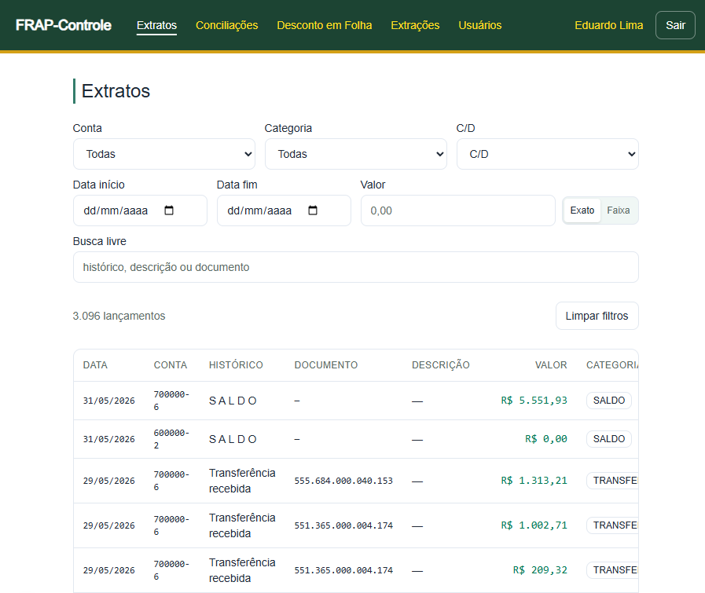
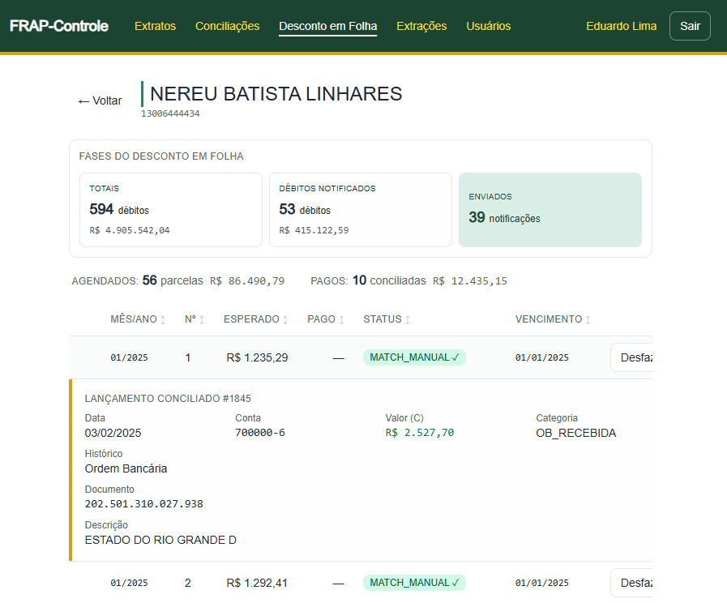
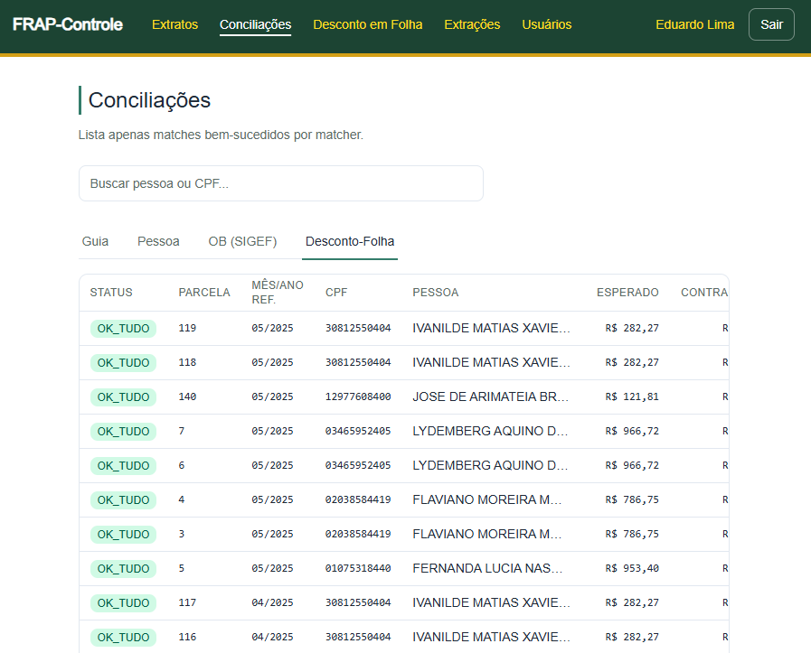
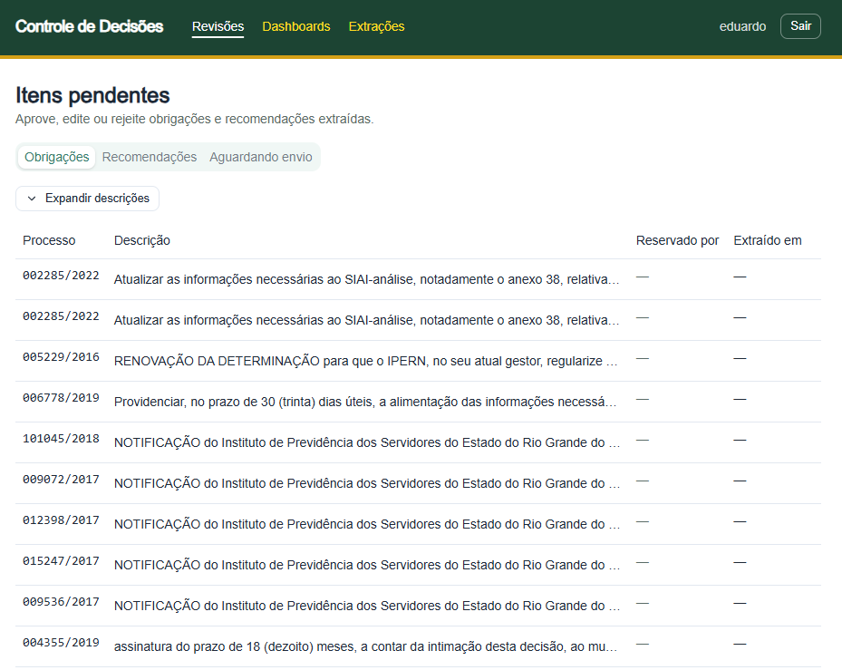
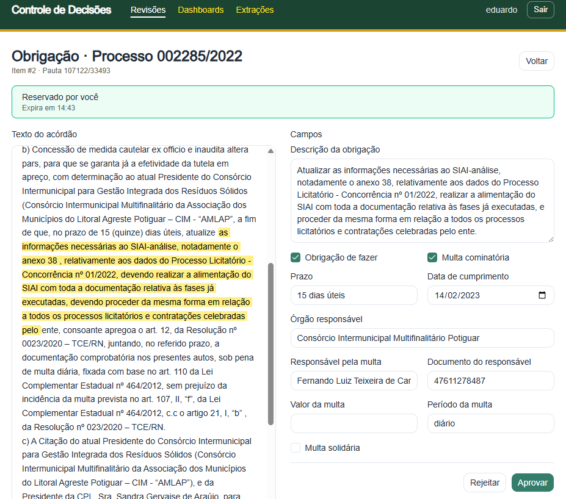

Acompanhamento
de Decisões
& Arrecadação
Coordenadoria de Controle de Decisões — CCD
De onde vem o dinheiro — janeiro a maio
Total no período: R$ 776,4 mil — R$ 326,6 mil em multa e R$ 449,8 mil repassados pela PGE.
Ainda nenhum pagamento por cartão de crédito. O canal está em piloto, com 40 solicitações no total (R$ 467 mil, em 21 débitos) aguardando conciliação.
Arrecadado pelo novo canal digital em 2026: R$ 1.481,87, todo por Pix.
Desconto
em folha
Cobrança da decisão direto no contracheque
Da decisão à cobrança efetiva
- Notificação ao órgão pagador → desconto mensal no contracheque → repasse ao FRAP
- Conciliação mensal: contracheque (folha) × crédito no FRAP
Desconto em folha em 2026 — R$ 199,3 mil descontados (jan–abr); maio ainda sem desconto confirmado. Valor em R$ mil por mês, conciliado com o FRAP.
1.165 devedores ainda podem entrar em folha
- Cruzamento Exe_Debito × folha (SIAI Pessoal): quem deve, está no contracheque e ainda não tem rubrica TCE/FRAP
- Só 50 dos que estão na folha já sofrem desconto — os outros 1.165 são oportunidade imediata de cobrança
Universo potencial por dado; cada caso ainda exige conferência de cabimento (trânsito em julgado, citação, suspensão).
Caso Nereu
Presidente do IPERN — débitos, desconto em folha e prescrição
594 débitos imputados
591 processos (origem × execução); composição: 451 multas e 143 multas cominatórias.
Dois vínculos, líquido de R$ 24,3 mil
Líquido — R$ 18.119,98
O desconto FRAP TC saltou de R$ 1.117,83 (abril) para R$ 5.291,22 em maio/2026 — já é o segundo maior desconto da folha, atrás só do IRRF.
Líquido — R$ 6.221,02
Sem desconto FRAP/TCE neste vínculo — o desconto do TCE recai apenas na folha da PGE.
Com a margem livre, os R$ 415 mil levam ~6 anos
A margem de 30% (R$ 6.728/mês) já tem R$ 1.117,83 ocupados pelo FRAP TC atual. Sobram R$ 5.610/mês livres → os R$ 415 mil levam ~74 parcelas (6 anos e 2 meses), sem contar a correção do saldo. Há ainda sindicato (R$ 178) e associação (R$ 134) na folha.
140 processos a menos de 1 ano do prazo
Dos 591 processos do caso, 140 estão em risco (a menos de 1 ano do prazo) e 448 em prazo seguro.
A prescrição corre em 5 anos a partir da decisão que constituiu o débito. Risco < 1 ano: o prazo vence em menos de 12 meses (4 a 5 anos desde a decisão) — são a prioridade para acelerar notificação e desconto. Prazo seguro: mais de 1 ano de margem.
Controle
do FRAP
Fundo de Reaparelhamento e Aperfeiçoamento
- O problema — conferir, depósito a depósito, quem pagou, quem ainda deve e o que ficou em aberto era trabalho manual, lento e sujeito a erro
- A solução — um sistema web que consolida tudo, com painéis por pessoa e por órgão e a régua Totais → Notificado → Enviado → Agendado/Pago
- O valor — transparência do saldo em aberto, controle gerencial mês a mês e rastreabilidade de toda conciliação (inclusive ajustes manuais, com autoria)
Base oficial
Roda sobre os dados do próprio TCE — sistemas de processos e de folha de pagamento — dentro da rede interna, sem planilhas paralelas.
O que o sistema faz
- Conciliação automática — cruza os extratos bancários com 4 fontes: desconto em folha, ordem bancária (SIGEF), guia e pessoa
- Investigação rápida — busca por pessoa (nome/CPF) e por processo (origem/execução), com débitos e vínculos em segundos
- Detecção de anomalias — parcela duplicada, atraso sistemático, CPF sem registro na folha e repasses fora do padrão viram pauta de fiscalização
- Operação e segurança — ingestão e conciliação mensal/anual automatizadas
Ingestão e conciliação de extratos

Acompanhamento por responsável — caso Nereu

Acompanhamento do desconto em folha

Sistema
do CGAD
Cadastro Geral de Acompanhamento de Decisões
Do texto livre do acórdão ao dado auditável
Com IA na extração e o servidor no controle.
- O problema — as decisões do TCE/RN registram multas, obrigações, ressarcimentos e recomendações em texto livre (texto_acordao); localizar, padronizar e acompanhar manualmente é lento e sujeito a erro
- A solução — uma aplicação lê o acórdão, usa IA para extrair os itens em registros estruturados e os entrega a um app web onde o servidor aprova, edita ou rejeita cada extração — preservando o original da IA e gravando a decisão do revisor como trilha de auditoria
Duas etapas de IA e a revisão humana
O original da IA é preservado e a decisão do revisor é gravada como trilha de auditoria.
Itens extraídos do acórdão

Revisão do servidor

Conclusão
- Desconto em folha — 161 servidores em 76 órgãos; R$ 199,3 mil descontados em 2026. Caso Nereu: 140 processos em risco de prescrição
- FRAP — R$ 938,8 mil arrecadados em 2026; novo canal Pix/Cartão em piloto
- CGAD — sistema com IA extrai e estrutura os itens do acórdão; o servidor valida cada extração, com trilha auditável
Obrigado.
Coordenadoria de Controle de Decisões — CCD